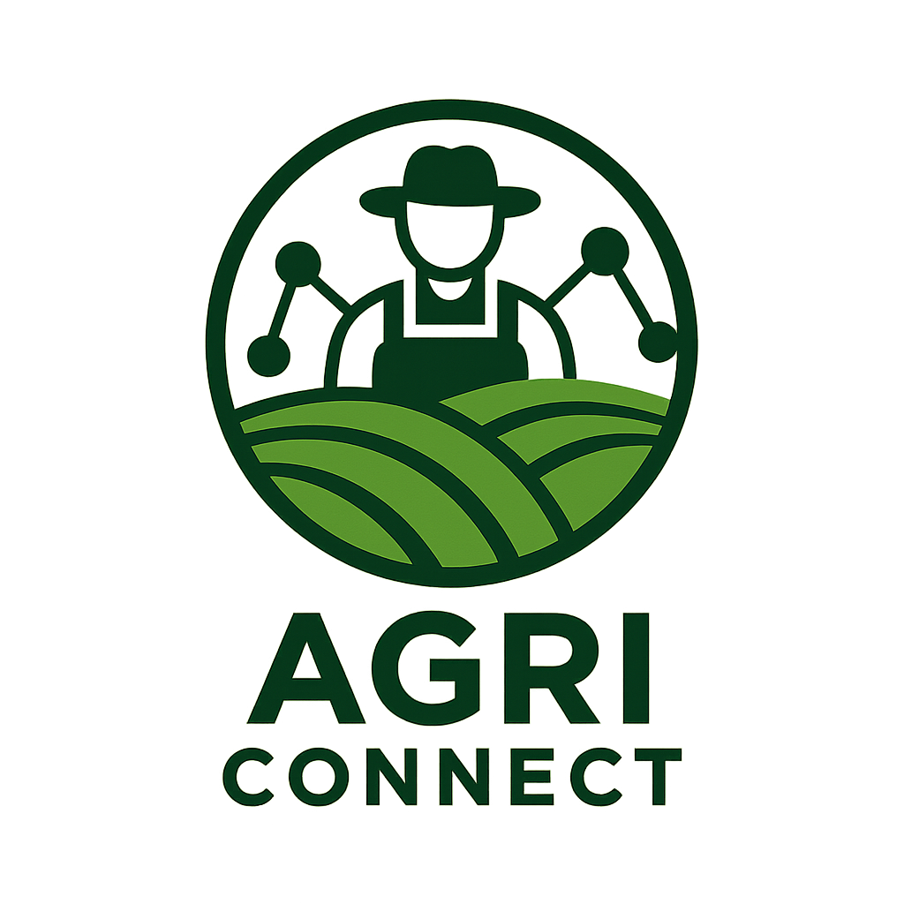
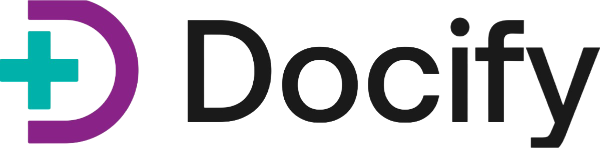
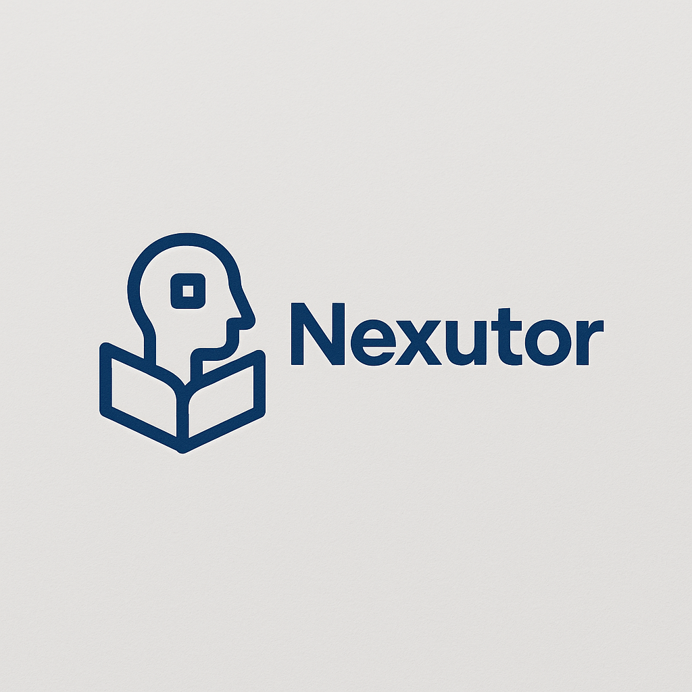
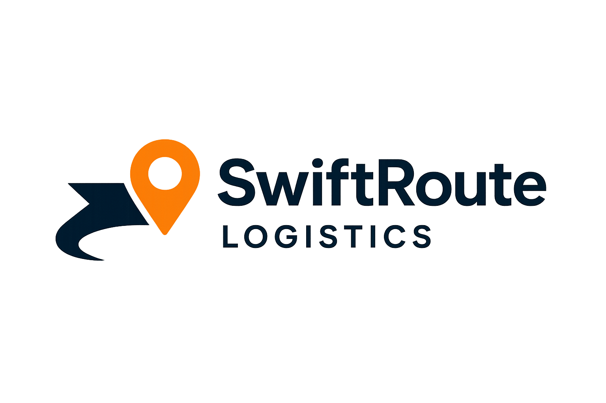
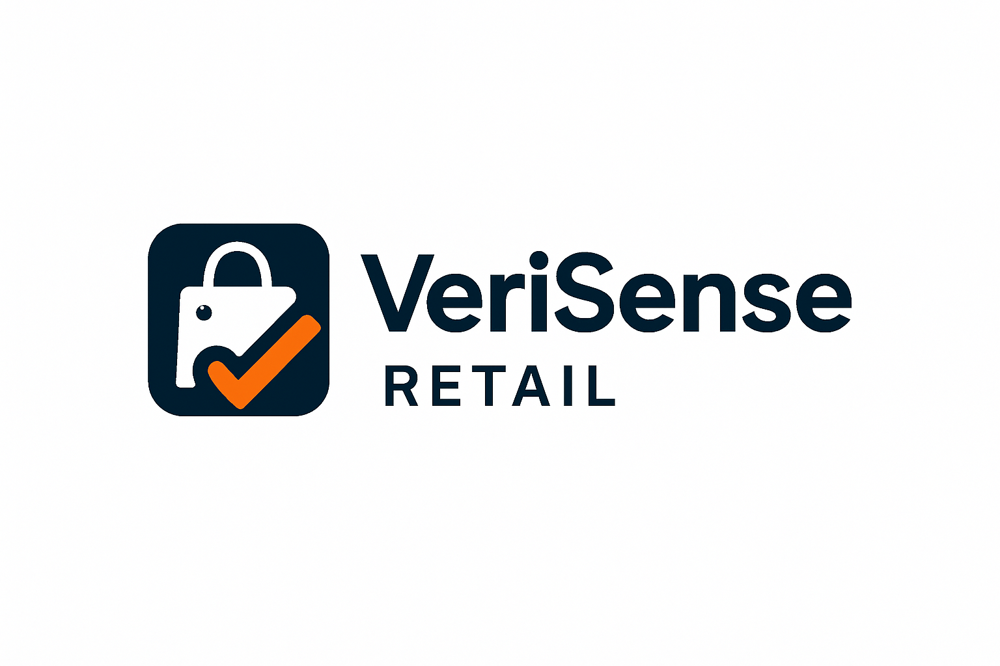
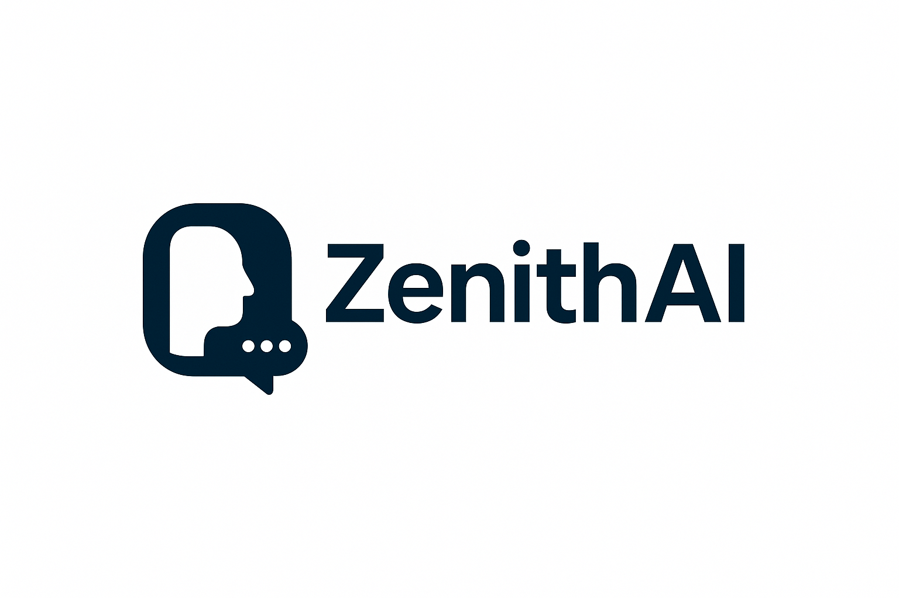
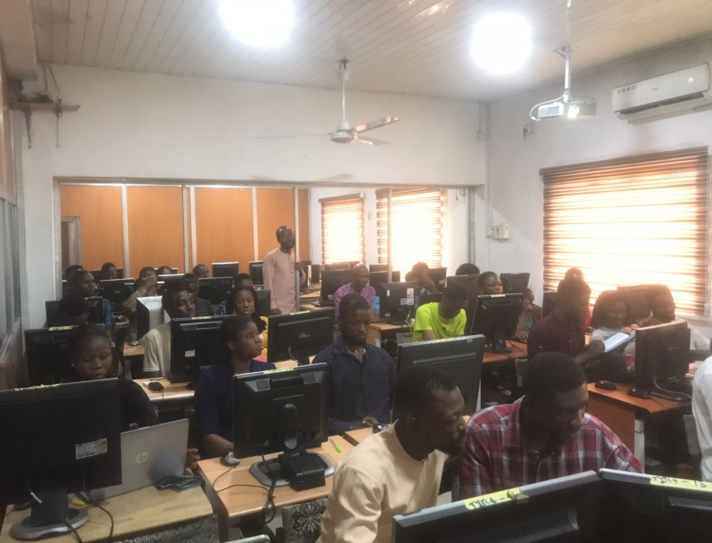
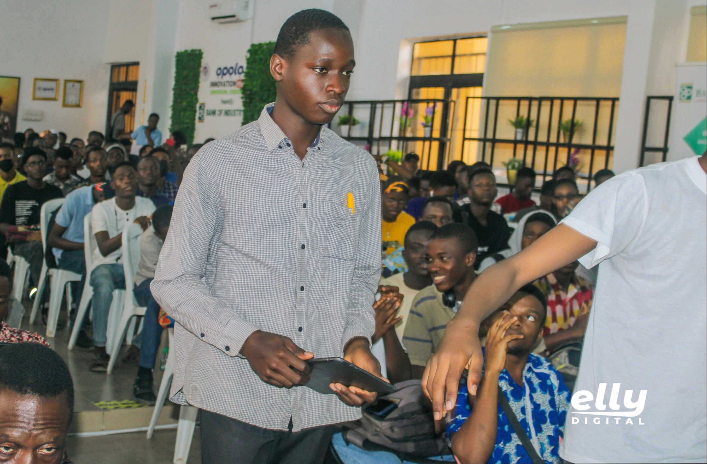
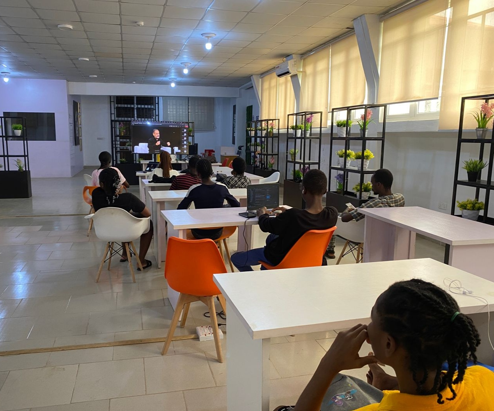

Hi, I'm Enoch
Technical Project Manager | I use technology to optimize operations and grow the bottom line.
I help corporate teams run operations effectively. By applying the right technology to the way work actually gets done automating manual processes, tightening delivery cycles, and removing operational waste. I turn efficiency gains into measurable financial impact: lower cost-to-serve, faster time-to-revenue, and resources freed to reinvest in growth. I pair a Computer Science foundation (B.Sc., Second Class Upper) with an ongoing M.Sc. in Artificial Intelligence, so I can translate business goals into technical execution and keep both non technical and technical teams aligned. Across few organizations, I've delivered NGN 15M+ in cost savings, cut delivery time by 15%, and reduced defects by 40% efficiency that flows straight to the bottom line.
What I Do
I apply technology to corporate operations — cutting waste, automating manual work, and tightening delivery — so efficiency gains translate into real financial impact.
Operations Optimization
I find where time, effort, and money leak out of day-to-day operations, then apply the right technology and process changes to close the gap — converting efficiency gains into lower operating cost and stronger margins.
Automation & Workflow Redesign
I map how work actually flows, automate the manual and repetitive steps, and rebuild processes around tools teams will keep using — freeing skilled hours to be reinvested in revenue-generating work.
Faster, Cleaner Delivery
I run software products end-to-end — sprint planning, QA, and release management — accelerating time-to-market and cutting rework, so the business captures revenue sooner and spends less fixing defects.
Data-Driven Decisions & Enablement
I turn operational data into KPI dashboards leaders can act on, and build the internal capability — through training and clear documentation — to sustain the gains long after the project ends.
Skills & Expertise
Project & Product Delivery
- Agile delivery
- Sprint planning
- Backlog management
- Cross-functional team leadership
- Stakeholder management
Digital Transformation
- Process mapping
- Workflow redesign
- Technology adoption
- Automation
- Digital maturity assessment
Business Analysis
- Requirements gathering
- User stories
- Solution evaluation
- Technical documentation
Data & Reporting
- Excel
- Power BI
- SQL
- KPI dashboards
- Performance reporting
Technology & Tools
- Python
- Flask
- Django
- REST APIs
- Jira, ClickUp, Zapier, Google Workspace
My Portfolio
A selection of products I've led. The three flagged Flagship are where I owned delivery end-to-end — open them for the full case detail.

Agri Connect
Connecting small-scale farmers to markets and resources.

Docify
AI translation for seamless healthcare communication.

N Youth League Cup (NYLC)
Youth football league app for fans, live scores, and highlights.
Prayer Portal
A mobile app for a global community of believers.

Nexutor
An edutech AI startup for personalized learning.
Studhab
Coding education with financial incentives for students.
OSUSU
A communal savings platform for friends and family.

SwiftRoute Logistics
AI-powered logistics for route and fleet optimization.

VeriSense Retail
Smart retail solution using computer vision for inventory.

ZenithAI
An AI platform for automated customer service.
Leadership Experience




Professional Experience
B2B and B2C Product Delivery & Quality Acceleration
Key Achievements
- Directed end-to-end delivery of 10 B2B and B2C software products, achieving 15% faster time-to-market through improved sprint planning and release processes.
- Reduced post-release defects by 40% by implementing structured QA practices including test planning, regression cycles, and acceptance criteria definition.
- Delivered NGN 5M+ in cost savings across multiple software engagements through lean resource allocation, scope control, and streamlined vendor management.
Platform Delivery for a Global Faith-Based Network
Key Achievements
- Led delivery of 5 digital platforms for a global faith-based network, coordinating distributed volunteer teams from requirements through deployment.
- Translated organizational goals into structured technical solutions, improving adoption and engagement for platforms serving 2000+ users annually.
- Delivered on a volunteer-only model with no commercial budget, managing timelines, releases, and international stakeholder communications to a consistent cadence.
Full-Cycle Delivery for Gaming & eLearning Products
Key Achievements
- Managed full-cycle delivery of a mobile racing game and an eLearning application, achieving 90% client satisfaction through proactive communication and structured delivery management.
- Led requirements gathering, project coordination, QA testing, and final deployment for both products, reducing revision cycles and delivery risk.
- Designed a delivery process framework adopted across 3 internal teams, improving consistency and project visibility organization-wide.
Infrastructure Reliability & Digital Literacy Enablement
Key Achievements
- Managed IT infrastructure health across the organization, improving performance by 20% and maintaining 99.5%+ system uptime through proactive monitoring, maintenance scheduling, and rapid incident response.
- Implemented digital infrastructure protocols that reduced system downtime incidents by 35%, ensuring uninterrupted operations for staff and learners.
- Delivered structured technical training to 150 learners, measurably improving digital literacy and employment readiness across the cohort.
Credentials

Certified Associate in Project Management (CAPM)
Exam Scheduled — Aug 2026Project Management Institute
Registered and actively preparing; sitting the certification exam in August 2026.
Let's Make Your Operations Pay Off
If your team is losing time and money to manual processes or slow delivery, let's talk. I'll help you find the efficiency gains — and turn them into measurable financial impact. I'm available for new projects and would love to understand your specific challenges.